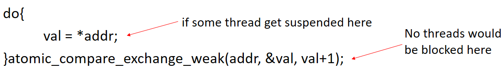
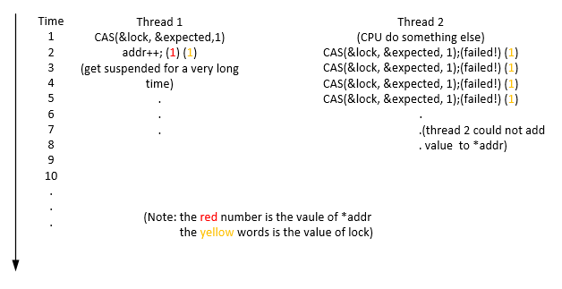

Lock-free vs spin-lock
So, given a piece of code, how do you know if it's lock-based or lock-free? Let's first see two examples. Both of them are multi-threads get access to a shared variable and do the addition on it. Here is the version by using lock-free programming.
1 #inlcude<stdio.h>
2 #include<stdatomic.h>
3 #include<pthread.h>
4 _Atomic int num_circulations = 0; //record how many circulations the program has done in the while loop
5 int addr = 0;
6 void *adding(void *input)
7 {
8 int val;
9 for(int i=0; i<1000000; i++)
10 {
11 do{
12 val = addr;
13 num_circulations++;
14 }while(!atomic_compare_exchange_weak(&addr, &val, val+1));
15 }
16 pthread_exit(NULL);
17 }
18
19 int main()
20 {
21 pthread_t tid[10];
22 for(int i=0; i<10; i++)
23 pthread_create(&tid[i], NULL, adding, NULL);
24 for(int i=0; i<10; i++)
25 pthread_join(tid[i], NULL);
26 printf("the value of addr is %d\n", addr);
27 printf("the value of num_circulations is %d\n", num_circulation);
28 }
Here, it is the version of spin-lock for the same purpose.
1 #include<stdio.h>
2 #include<stdatomic.h>
3 #include<pthread.h>
4 _Atomic int num_circulations = 0; //record how many circulations the program has done in the while loop
5 int addr = 0;
6 int lock = 0;
7 void *adding(void *input)
8 {
9 int expected = 0;
10 for(int i=0; i<1000000; i++)
11 {
12 while(!atomic_compare_exchange_weak(&lock, &expected, 1))
13 {
14 expected = 0;
15 num_circulations++;
16 }
17 addr++;
18 lock = 0;
19 }
20 }
21
22 int main()
23 {
24 pthread_t tid[10];
25 for(int i=0; i<10; i++)
26 pthread_create(&tid[i], NULL, adding, NULL);
27 for(int i=0; i<10; i++)
28 pthread_join(tid[i], NULL);
29 printf("the value of addr is %d\n", addr);
30 printf("the value of num_circulations is %d\n", num_circulations);
31 }
Let's see the addition part of both programs.(For the lock-free program, it is the code from line 11 to 14, for the spin-lock program, it is the code from line 12 to 18) They're both loops, and very similarly-looking ones. Moreover, we can loop at both loops for an period of time. How come they're at the opposite sides of the locking/lock-free distinction?! Where's the difference?
The important difference is that lock-free programs are guaranteed to make progress. With a lock or spin lock, the poor thread that can't acquire the lock can do nothing except wait (either via a busy wait or an OS-assisted sleep). If the thread that holding the lock gets suspended suddently, no thread could make progress to the program.
The lock-free loop, although it is also need to loop again when it fails to update the vaule of addr. However, every time it would guarantee at least one thread to make progress. Even though some threads get suspended suddently at anywhere, other threads could still make progress to do the addition.

Let's suppose there are two threads modify the value of *addr concurrently. Through the above image(we omit some unimportant operations), we could see that thread 1 and thread 2 both get the same local copy of *addr(0), and thread 1 updates the value first and then gets suspended for a very long time. Through the definition of CAS, we could easily know that thread 2 would fail the CAS because the value of *addr has been change to 1, then thread 2 do the some calculation again, keep adding 1 to *addr no matter how long the thread 1 is suspended.
The second loop – the spin lock – will very much get stuck if another thread obtains the lock and then gets suspended before releasing it. During the suspended time of that thread who owning the lock, other threads could just do nothing but keep looping and make no progress to the addition.

As the same, let's suppose there are two threads modify the value of *addr concurrently. Through the above image, we could see that thread 1 gets the lock first and updates the value of *addr. However, before it changes the state of lock, it gets suspended! While at the same time, thread 2 could just keep looping, testing the CAS and failing again and again. So, if thread 1 gets suspended for a very very long time, the thread 2 would be blocked and the value of *addr would being 1 forever. This is very different from the lock-free example!
So the main difference between lock-free and lock-based program is in whether other threads could make progress if some threads get suspended. If yes, it is lock-free, or it is lock-based.
Let's see the output and performance of the above two programs.
Lock-free:
the value of addr is 10000000
the value of num_circulations is 25514047
Below is the running time:
real 0m2.687s
user 0m10.652s
sys 0m0.0004s
Lock-based:
the value of addr is 10000000
the value of num_circulations is 33141980
Below is the running time:
real 0m3.755s
user 0m14.820s
sys 0m0.012s
From the result of lock-free, we could see that every time when CAS fails, the thread should redo the whole part in the while-loop, while for the lock-based, the other threads would keep looping when one thread is holding the lock. Finally, in this example, we could see that lock-free program is quicker than lock-based(spin-lock) program.